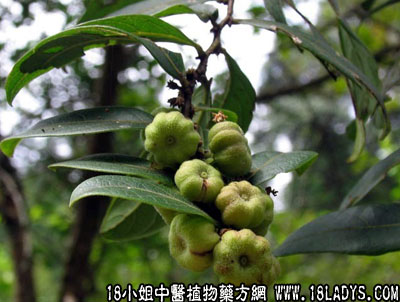

别名：狮子滚球、盒仔草。
植物名：算盘子。
生长环境：本品为直立分枝灌木。生于山野间，或郊外路旁。
分布：我国东南部和中部。
入药部分：全株。
采期：全年。
自采地点：山岗。
性味：性凉、味微苦。
功能：清热、消滞、止泻。
主治、用量和用法：1、癍痧发热：干用5钱至1两，清水煎服；2、食滞肚痛：用法同上；3、牛出痧发热，配伍用。
验方1：（治癍痧发热方）细沙5钱、海金沙藤5钱、蛇泡簕5钱、金盏银盘5钱、清水三碗，煎成一碗。
（方解）本方细沙为凉血清癍毒之品；蛇泡簕泻火；金盏银盘清热；海金沙藤渗温利水，全方以清热解毒利水为主，配方精简，疗效亦高。
（方歌）癍痧发热势凶凶，细沙海金两沙攻，金盏银盘蛇泡簕，同歼大毒显奇功。
验方2：（治牛出痧发热方）细沙1斤、大沙1斤、海金沙藤1斤、苦地胆1斤、清水适量，煎服。
（方解）牛出痧发热亦是热毒病，方中细沙、大沙、苦地胆苦凉泄热，海金沙藤利水，使热毒从小便而出，对热毒为患之耕牛出痧发热，用之有效。
（方歌）耕牛发热毒出痧，细沙大沙海金沙，加入地胆同煎服，利水清热效堪夸。
参考资料：《广东中医验方交流汇编》内记载喉痰毒熏方：算盘子、龙眼树二层皮，将药煎水，放入米筒内，乘热张口合米筒上熏喉间，则痰自喉中流出，末尽再熏，甚者至三、四次。
《广州常用草药验方集解》内记载治疗儿童消化不良验方：葫芦茶、田鸡草、布渣叶、狮子滚球、每味各用4至5钱，清水煎服。有解积滞，去肝火作用。
（方解）儿童肝郁火盛，可渐致消化不良，形成积滞。本方以狮子滚球为主，消积滞、止肚痛；佐以布渣叶消滞清热，葫芦茶消滞杀虫；田鸡草清肝化气去积。构成清肝化气消滞杀虫之剂。其药味甘平，清凉而不削伐，最适宜于儿童服用。
（方歌）小小儿童食滞疴，消化不良奈若何，葫芦茶合田鸡草，狮子滚球布叶愈。
附：鹅不食，亦名细沙，于本品不同，详见请在本站搜索“鹅不食”。
本文解释权归中药大全，本文地址：https://www.daquan.com/post/1543.html